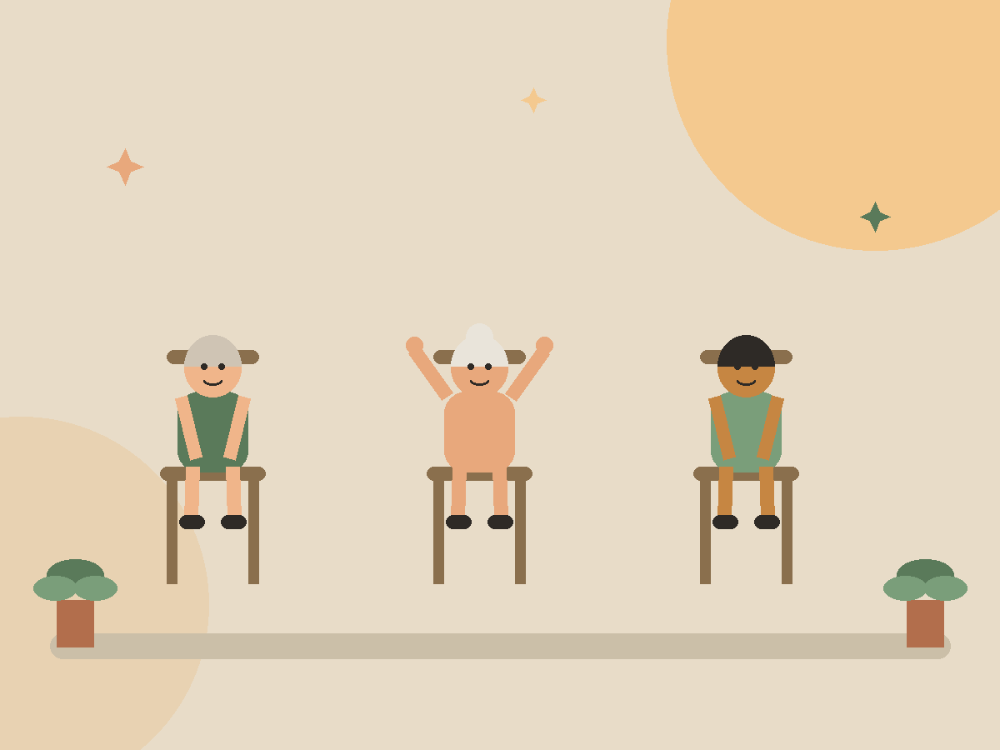
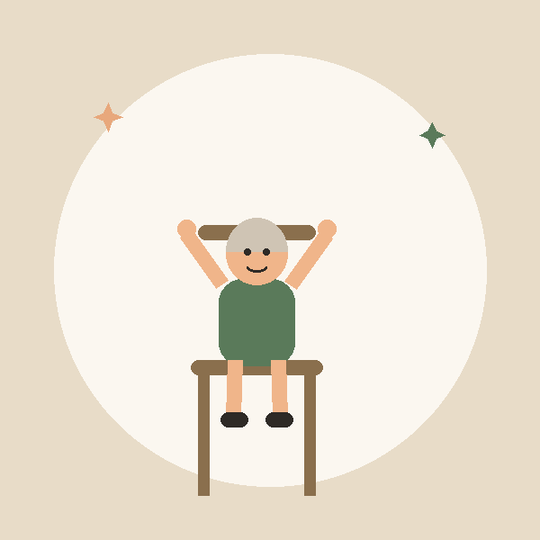
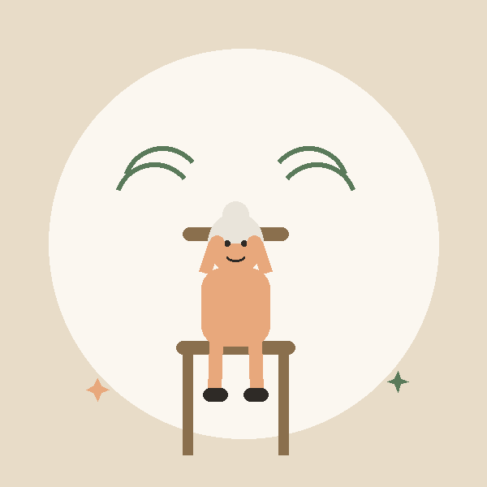
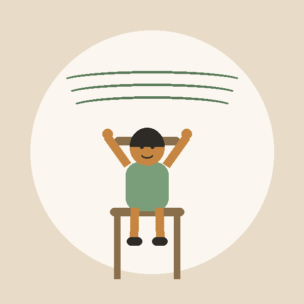

Chair yoga, face yoga, and gentle guided classes created especially for seniors. No getting down on the floor. No experience needed. Just real, feel-good movement — in person or live on Zoom.
Book Your First Free Class
Every class is taught seated or standing with chair support. Movements are slow, breath-led, and adaptable for arthritis, joint replacements, and limited mobility.

A full mind-body practice from the safety of your chair. Build balance, flexibility, and calm without ever getting on the floor.

Targeted gentle exercises and self-massage for the 40+ muscles of the face and neck. Wake up tired muscles, release jaw and forehead tension, and glow from the inside out.

A slower-paced, supportive class using chairs, walls, and straps. Perfect for active seniors who want a little more stretch while staying fully supported.
We built YearsYoga around one simple belief: movement should feel good at every age — and it should never require getting down on the ground.
Teachers trained in chair yoga, senior fitness, and safe modifications for common conditions like osteoporosis and arthritis.
Never more than 15 students per session, so every person gets personal attention and hands-on support.
Join from your living room on live video, or visit us at partner community centers in multiple US states.
Come as you are. Comfortable clothes and a sturdy chair are all you need. We celebrate every small victory.
All times listed in Eastern Time. Online classes welcome students from every state.
| Day | Time (ET) | Class | Format |
|---|---|---|---|
| Monday | 10:00 AM | Chair Yoga | Online (Live Zoom) |
| Tuesday | 11:00 AM | Face Yoga | Online (Live Zoom) |
| Wednesday | 9:30 AM | Gentle Flow Yoga | In Person — Community Center |
| Thursday | 10:00 AM | Chair Yoga | In Person — Community Center |
| Friday | 11:00 AM | Face Yoga + Relaxation | Online (Live Zoom) |
| Saturday | 9:00 AM | Gentle Flow Yoga | In Person — Community Center |
Real words from real seniors in our community.
"After my knee replacement I thought yoga was behind me. Chair yoga gave me my balance back — and my confidence."
"The face yoga class is my favorite half hour of the week. My jaw tension is gone and friends ask what my secret is!"
"I attend from my recliner in Ohio. The teachers check on everyone by name. It feels like family."
Have another question? Reach out anytime — we love to talk.
Not at all. Our classes are built for beginners and meet you exactly where you are today. Every movement has a simpler option.
Just a sturdy chair without wheels and comfortable clothing. For face yoga, clean hands and a quiet spot are all that's required.
Our instructors are trained in senior-safe modifications. However, yoga is not a substitute for medical care — please consult your physician before starting any new exercise program, and tell us about any conditions so we can adapt poses for you.
Your first class is free. After that, online classes are $12 each or $40/month unlimited, and in-person sessions are $15 each. Senior center partnership rates are also available.
After booking, you'll receive an email with a one-click Zoom link. No account or tech skills needed — just tap and join. We also offer a free 10-minute tech check before your first class.
Call us at (555) 214-6789 or send a message below. We'll help you pick the perfect class and answer any questions — no pressure, ever.